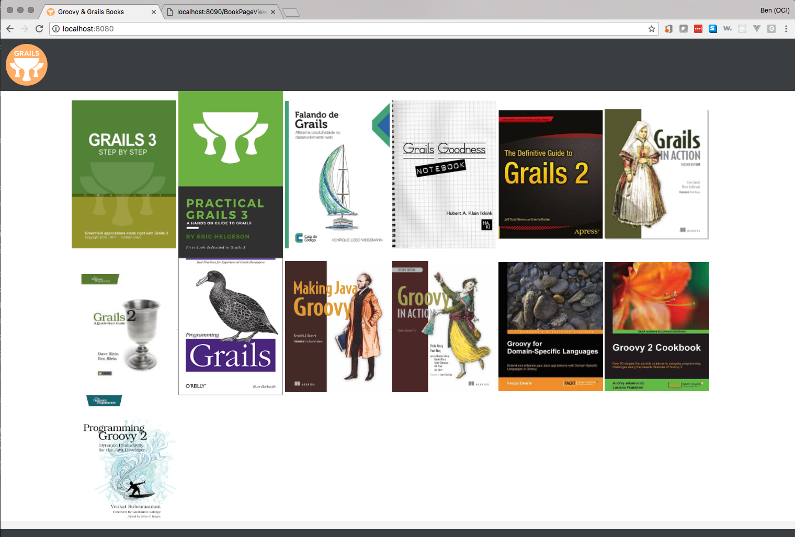
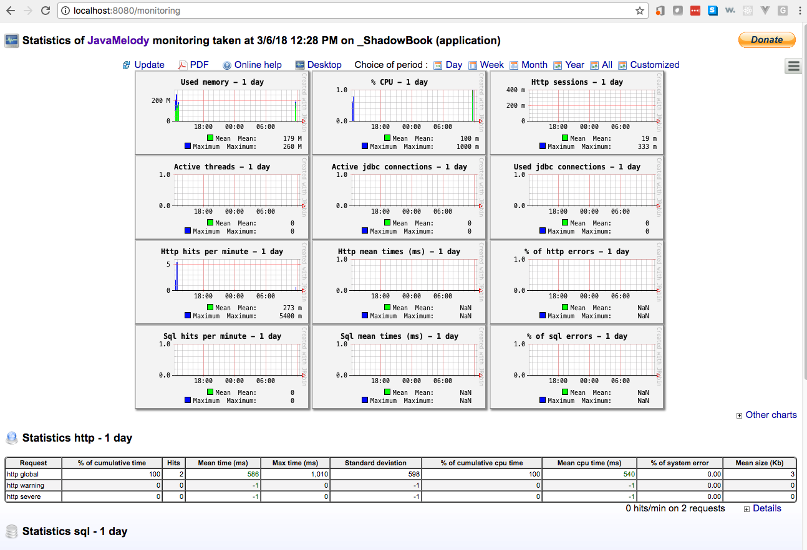
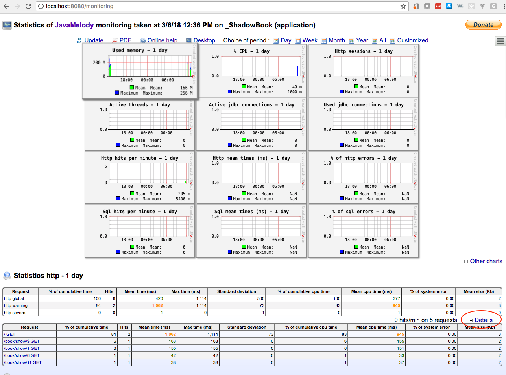
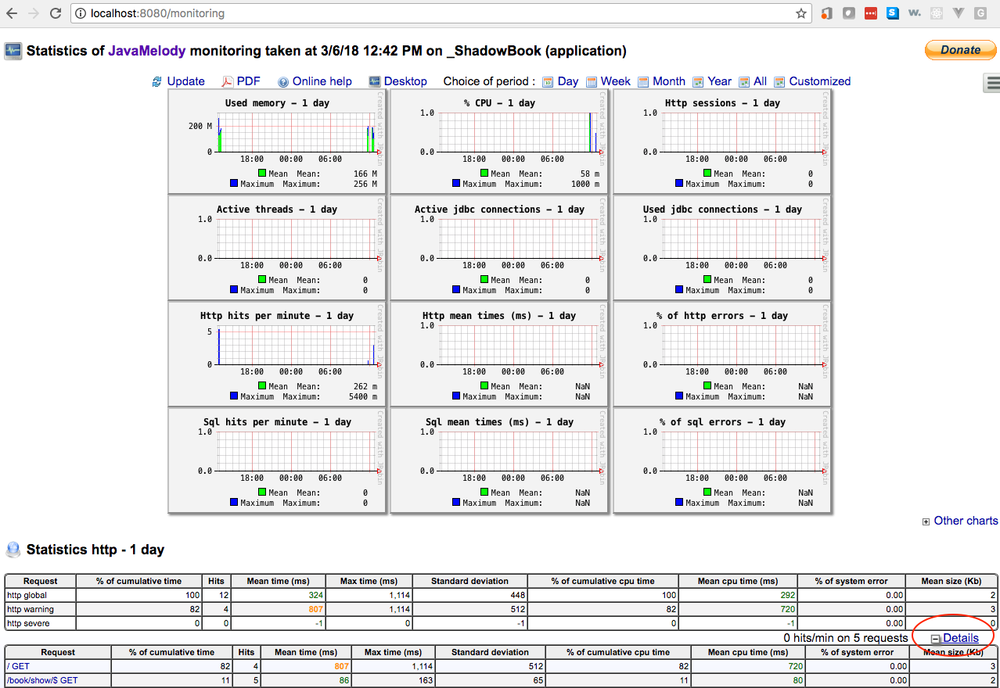

JavaMelody monitoring with Grails 3
Learn how to setup and monitor your application using JavaMelody
Authors: Ben Rhine
Grails Version: 4
1 Training
Apache Grails Training
Apache Grails is now part of the Apache Software Foundation. The community-maintained training catalog is being migrated; in the meantime see the Learning page for current resources, recorded talks, and links to other community-supplied training material.
2 Getting Started
In this guide we will show you how to setup and use JavaMelody with a Grails 3 application. We will be using the grails-melody-plugin
2.1 What you will need
To complete this guide, you will need the following:
-
Some time on your hands
-
A decent text editor or IDE
-
JDK 11 or greater installed with
JAVA_HOMEconfigured appropriately
2.2 How to complete the guide
To get started do the following:
-
Download and unzip the source
or
-
Clone the Git repository:
git clone https://github.com/grails-guides/grails-javamelody.git
The Grails guides repositories contain two folders:
-
initialOften a simple Grails app with some additional code to give you a head-start. -
complete
In this guide you are going to create a Grails Application. The complete app is a
completed example. It is the result of working through the steps presented by the guide and applying those changes to the initial folder.
To complete the guide, go to the initial folder
-
cdintograils-guides/grails-javamelody/initial
and follow the instructions in the next sections.
You can go right to the completed example if you cd into grails-guides/grails-javamelody/complete.
|
3 Application Overview
In this guide we will add monitoring to our application so we can collect statistics about how our app is performing. First we will build an app which lists books and the book’s details, after which we will add the monitoring and discuss what we can do with it.
3.1 Books Application
We have already placed the base app in the initial folder for you.
|
To quickly cover how to create the app, we first need to add a Book domain.
package demo
import grails.compiler.GrailsCompileStatic
@GrailsCompileStatic
class Book {
String image
String title
String author
String about
String href
static mapping = {
about type: 'text'
}
}The home page displays a list of books. We only need a subset of data from each book. Namely, the unique
identifier and the book cover image. Create a Groovy POGO to encapsulate that information in the src/main/groovy directory
package demo
import groovy.transform.CompileStatic
@CompileStatic
class BookImage {
Long id
String image
}Create default CRUD actions for Book leveraging GORM data services.
package demo
import grails.gorm.services.Service
import grails.gorm.transactions.ReadOnly
import groovy.transform.CompileDynamic
import groovy.transform.CompileStatic
import org.grails.datastore.mapping.query.api.BuildableCriteria
import org.hibernate.transform.Transformers
interface IBookDataService {
Book save(String title, String author, String about, String href, String image)
Number count()
Book findById(Long id)
}
@Service(Book)
abstract class BookDataService implements IBookDataService {
@CompileDynamic
@ReadOnly
List<BookImage> findAll() {
BuildableCriteria c = Book.createCriteria()
c.list {
resultTransformer(Transformers.aliasToBean(BookImage))
projections {
property('id', 'id')
property('image', 'image')
}
}
}
}Next, create a controller which consumes the service that we just created. Our index will leverage our custom findAll to
return a complete list of books while our show will make use of the data services findById.
package demo
import groovy.transform.CompileStatic
@CompileStatic
class BookController {
static allowedMethods = [index: 'GET', show: 'GET']
BookDataService bookDataService
def index() {
[bookList: bookDataService.findAll()]
}
def show(Long id) {
[bookInstance: bookDataService.findById(id)]
}
}Then we need to actually create the book data with our Bootstrap.groovy
package demo
import groovy.transform.CompileStatic
@CompileStatic
class BootStrap {
public final static List< Map<String, String> > GRAILS_BOOKS = [
[
title : 'Grails 3 - Step by Step',
author: 'Cristian Olaru',
href: 'https://grailsthreebook.com/',
about : 'Learn how a complete greenfield application can be implemented quickly and efficiently with Grails 3 using profiles and plugins. Use the sample application that accompanies the book as an example.',
image: 'grails_3_step_by_step.png',
],
[
title : 'Practical Grails 3',
author: ' Eric Helgeson',
href : 'https://www.grails3book.com/',
about : 'Learn the fundamental concepts behind building Grails applications with the first book dedicated to Grails 3. Real, up-to-date code examples are provided, so you can easily follow along.',
image: 'pratical-grails-3-book-cover.png',
],
[
title : 'Falando de Grails',
author: 'Henrique Lobo Weissmann',
href : 'http://www.casadocodigo.com.br/products/livro-grails',
about : 'This is the best reference on Grails 2.5 and 3.0 written in Portuguese. It's a great guide to the framework, dealing with details that many users tend to ignore.',
image: 'grails_weissmann.png',
],
[
title : 'Grails Goodness Notebook',
author: 'Hubert A. Klein Ikkink',
href : 'https://leanpub.com/grails-goodness-notebook',
about : 'Experience the Grails framework through code snippets. Discover (hidden) Grails features through code examples and short articles. The articles and code will get you started quickly and provide deeper insight into Grails.',
image: 'grailsgood.png',
],
[
title : 'The Definitive Guide to Grails 2',
author: 'Jeff Scott Brown and Graeme Rocher',
href : 'http://www.apress.com/9781430243779',
about : 'As the title states, this is the definitive reference on the Grails framework, authored by core members of the development team.',
image: 'grocher_jbrown_cover.jpg',
],
[
title : 'Grails in Action',
author: 'Glen Smith and Peter Ledbrook',
href : 'http://www.manning.com/gsmith2/',
about : 'The second edition of Grails in Action is a comprehensive introduction to Grails 2 focused on helping you become super-productive fast.',
image: 'gsmith2_cover150.jpg',
],
[
title : 'Grails 2: A Quick-Start Guide',
author: 'Dave Klein and Ben Klein',
href : 'http://www.amazon.com/gp/product/1937785777?tag=misa09-20',
about : 'This revised and updated edition shows you how to use Grails by iteratively building a unique, working application.',
image : 'bklein_cover.jpg',
],
[
title : 'Programming Grails',
author: 'Burt Beckwith',
href : 'http://shop.oreilly.com/product/0636920024750.do',
about : 'Dig deeper into Grails architecture and discover how this application framework works its magic.',
image: 'bbeckwith_cover.gif'
]
] as List< Map<String, String> >
public final static List< Map<String, String> > GROOVY_BOOKS = [
[
title: 'Making Java Groovy',
author: 'Ken Kousen',
href: 'http://www.manning.com/kousen/',
about: 'Make Java development easier by adding Groovy. Each chapter focuses on a task Java developers do, like building, testing, or working with databases or restful web services, and shows ways Groovy can make those tasks easier.',
image: 'Kousen-MJG.png',
],
[
title: 'Groovy in Action, 2nd Edition',
author: 'Dierk König, Guillaume Laforge, Paul King, Cédric Champeau, Hamlet D\'Arcy, Erik Pragt, and Jon Skeet',
href: 'http://www.manning.com/koenig2/',
about: 'This is the undisputed, definitive reference on the Groovy language, authored by core members of the development team.',
image: 'regina.png',
],
[
title: 'Groovy for Domain-Specific Languages',
author: 'Fergal Dearle',
href: 'http://www.packtpub.com/groovy-for-domain-specific-languages-dsl/book',
about: 'Learn how Groovy can help Java developers easily build domain-specific languages into their applications.',
image: 'gdsl.jpg',
],
[
title: 'Groovy 2 Cookbook',
author: 'Andrey Adamovitch, Luciano Fiandeso',
href: 'http://www.packtpub.com/groovy-2-cookbook/book',
about: 'This book contains more than 90 recipes that use the powerful features of Groovy 2 to develop solutions to everyday programming challenges.',
image: 'g2cook.jpg',
],
[
title: 'Programming Groovy 2',
author: 'Venkat Subramaniam',
href: 'http://pragprog.com/book/vslg2/programming-groovy-2',
about: 'This book helps experienced Java developers learn to use Groovy 2, from the basics of the language to its latest advances.',
image: 'vslg2.jpg'
],
] as List< Map<String, String> >
BookDataService bookDataService
def init = { servletContext ->
for (Map<String, String> bookInfo : (GRAILS_BOOKS + GROOVY_BOOKS)) {
bookDataService.save(bookInfo.title, bookInfo.author, bookInfo.about, bookInfo.href, bookInfo.image)
}
}
def destroy = {
}
}Lastly, we update our URL mapping so that the default endpoint / displays a list of books.
package demo
class UrlMappings {
static mappings = {
"/$controller/$action?/$id?(.$format)?"{
constraints {
// apply constraints here
}
}
"/"(controller: "book") (1)
"500"(view:'/error')
"404"(view:'/notFound')
}
}| 1 | Updated default URL |
Run the app
$ ./gradlew bootRun
4 Adding Melody
Add monitoring to the app with JavaMelody. First, add the required dependency.
compile 'org.grails.plugins:grails-melody-plugin:1.70.0'Sometimes, when using a Grails plugin you want to upgrade a transitive dependency which the plugin
author has not yet upgraded. If you run the gradle task dependencies, you will see the next dependency graph.
\--- org.grails.plugins:grails-melody-plugin:1.70.0
+--- net.bull.javamelody:javamelody-core:1.70.0
| \--- org.jrobin:jrobin:1.5.9
+--- com.lowagie:itext:2.1.7
\--- org.jrobin:jrobin:1.5.9You can upgrade to the latest version of Java Melody 1.71.0 easily:
compile('org.grails.plugins:grails-melody-plugin:1.70.0') {
exclude group: 'net.bull.javamelody', module: 'javamelody-core'
}
compile 'net.bull.javamelody:javamelody-core:1.71.0'And … that’s it, with JavaMelody now added to our application, restart the app and then navigate to
http://localhost:8080/monitoring and you should see the following.

At this point go click around the app and then return to the JavaMelody home page and expand
details to see that it has caught your activity in the app. By default JavaMelody looks at your
URIs to resolve HTTP Requests. This means that /book/1 and /book/6 will be listed separately.

If you do not want to get separate statistics per book, but an aggregate of the book detail endpoint,
you can tell JavaMelody to report on requests in aggregate. In our application.yml. add the
following:
javamelody:
# filter out numbers from URI
http-transform-pattern: \d+Now once you have restarted the app so it picks up our config changes, do the same as last
time, navigate to a few different books then return to http://localhost:8080/monitoring and
expand the details to see the aggregate data across multiple requests.

From the home screen you can easily filter your application statistics over different periods
of time by selecting Day, Week, Month, Year, All, or define a Customized range in
which to view stats. Additionally if you want to get a copy of all JavaMelody metrics for
offline viewing click the PDF button to download a copy.
If you want the ability to enable and disable JavaMelody easily just add the following to
your application.yml to be able to easily toggle monitoring on and off.
javamelody:
disabled: trueSimilarly to HTTP request, you can aggregate stats for SQL monitoring.
Add the following to your application.yml.
javamelody:
sql-transform-pattern: \d+If you are using Spring Security Core and Java Melody plugins in the same app, you will need to configure the security access to the /monitoring endpoint.
grails:
plugin:
springsecurity:
controllerAnnotations:
staticRules:
-
pattern: /monitoring
access:
- ROLE_ADMINAdding the previous configuration to application.yml means you will need to be authenticated with a user who has ROLE_ADMIN
access to access the /monitoring.
5 Next Steps
To further your understanding, read through the Java Melody’s project documentation, Additionally feel free browse the wiki. If you have more advanced needs look Java Melody User Advanced Guide.
6 Do you need help with Grails?
Help with Apache Grails
Apache Grails is supported by an active community of contributors and the Apache Software Foundation. If you need help working through a guide, want to discuss the framework, or have run into something that looks like a bug, the channels below are the right place to start.
-
Slack - real-time conversation with the Apache Grails community.
-
Developer mailing list - design discussions and contributor coordination.
-
Users mailing list - end-user questions and answers.
-
Issue tracker on GitHub - file a bug or feature request against the framework.
For Grails plugins, see the matching project on the apache org or the plugin’s own GitHub repository.